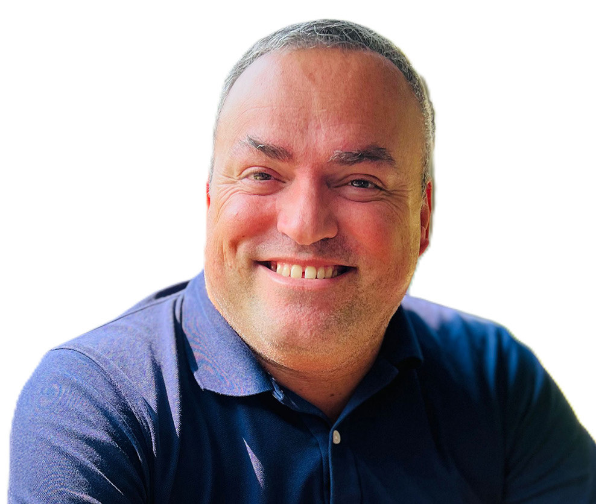

Ask him what a right project feels like and he talks about energy, not scale. You can see where your effort matters. That feeling is now a filter. Bid where the programme can stay honest, where long-lead items can be locked in early, where people prefer fewer surprises and clearer choices.
Outside of work, small rituals keep the pace grounded. Port FC matches. Solo coffees to think about what he can improve. Early gym sessions so the day does not set the terms.
From the UK he keeps two rules close: listen first, and if you say you will do something, do it. Bangkok added one more lesson: be patient. “I was used to things happening much faster in the UK. I had to learn quickly to be patient.”
Look a year ahead and he defines good in simple terms. Two or three projects that made a visible difference, work recognised for clarity, creativity and solid outcomes. A team that has grown in capability and confidence.

Newer members stepping up. Shared habits that make collaboration smoother instead of draining.
For Mint, Thailand is not a one-off. It is the next chapter in a Southeast Asia story written the same way wherever we work: agile coordination, reliable programmes and quality you can see at handover.
Ask Nuno what he wants a client to say at the end of a job and he does not hesitate. That Mint is trustworthy. That Mint knows what it is doing. That they would be happy to work with Mint again.